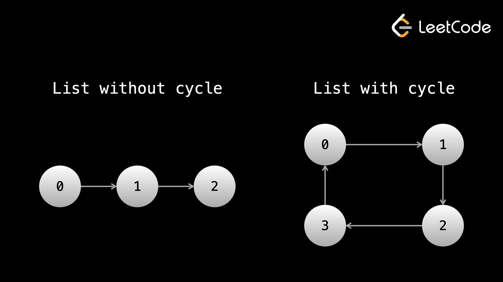

Быстрые и медленные указатели — это реализация метода двух указателей, который мы изучили в главе о массивах и строках. Идея состоит в том, чтобы иметь два указателя, которые не перемещаются рядом. Это может означать, что они движутся с разной «скоростью» во время итерации, начинают итерацию из разных мест или имеют любую другую абстрактную разницу.
Когда указатели перемещаются с разной скоростью, обычно «быстрый» указатель перемещает два узла за итерацию, тогда как «медленный» указатель перемещает один узел за итерацию (хотя это не всегда так). Вот некоторый псевдокод:
slow = head
fast = head
while fast and fast.next:
Do something here
slow = slow.next
fast = fast.next.next
Причина, по которой нам нужно условие while для проверки fast.next, заключается в том, что если fast находится в конечном узле, тогда fast.next имеет значение null, и попытка доступа к fast.next.next приведет к ошибке (вы бы сделали null.next).
Давайте рассмотрим несколько примеров, где могут пригодиться быстрые и медленные указатели.
Пример 1. Учитывая заголовок связанного списка с нечетным количеством узлов, верните значение узла в
середине.
Например, если задан связанный список, представляющий 1 -> 2 -> 3 -> 4 -> 5, верните
3.
Как упоминалось в предыдущей статье, самый простой способ решить эту проблему — просто преобразовать связанный список в массив, пройдя по нему, а затем просто вернув число в середине.
array = int[]
while head:
array.push(head.val)
head = head.next
return array[array.length // 2]
По сути, это «обман» и никогда не будет считаться приемлемым решением на собеседовании. Возможно, вы поняли, что сложность этой проблемы связана с тем, что мы не знаем длины связанного списка. Единственное, что мы могли бы сделать, — это один раз пройтись по связанному списку с помощью фиктивного указателя, чтобы найти длину, а затем снова выполнить итерацию от головы, как только мы узнаем длину, чтобы найти середину.
length = 0
dummy = head
while dummy:
length += 1
dummy = dummy.next
for _ in range(length // 2):
head = head.next
return head.val
Самое элегантное решение — использование техники быстрого и медленного указателя. Если у нас один указатель движется в два раза быстрее другого, то к тому времени, как он достигнет конца, медленный указатель пройдет половину пути, поскольку он движется с половиной скорости.
Помните, что slow и fast совершенно независимы друг от друга.
На каждой итерации цикла while мы продвигаем fast вперед на два шага, поэтому это займет n / 2 итерации, чтобы достичь конца. В каждой итерации slow перемещается на один шаг вперед, поэтому после n / 2 итераций, slow будет в середине, а это именно то, что нам нужно.
Не забывайте, что при использовании fast.next.next вы также должны убедиться, что fast.next не имеет значения null, чтобы избежать ошибок.
slow = head
fast = head
while fast and fast.next:
slow = slow.next
fast = fast.next.next
return slow.val
Указатели используют O(1) пространства, и если существуют n узлов в связанном списке, временная сложность равна O(n) для обходов.
Example 2: 141. Linked List Cycle
Дан head связанного списка, определите, есть ли в связанном списке цикл.
В связанном списке существует цикл, если в списке есть некоторый узел, к которому можно снова добраться,
непрерывно следуя по next указателю.
Если связанный список имеет цикл, вы можете представить себе некоторую группу узлов, образующую круг, и обход никогда не заканчивается, поскольку он движется по этому кругу бесконечно. Один из способов попытаться решить эту проблему — просто перебрать список сколь угодно большое количество итераций. Если цикла нет, то в конечном итоге мы достигнем конца списка. Если цикл существует, то мы никогда не достигнем конца и после огромного количества итераций можем прийти к выводу, что цикл, вероятно, существует.
Проблема этого подхода в том, что он не является общим решением. Что, если цикла нет, но узлов просто больше, чем предел итерации? Если мы увеличим количество итераций, мы всегда можем утверждать, что можем передать более длинный связанный список. Если мы сделаем ограничение слишком большим, это станет непрактичным, и мы будем хардкодить, что является ужасной практикой.
Лучшим подходом является использование быстрого и медленного указателя. Представьте себе прямую гоночную трассу (например, ту, что используется в спринте на 100 метров). Если соревнуются два бегуна с существенно разными скоростями, то более медленный никогда не догонит более быстрого. Более быстрый бегун, завершающий забег, подобен быстрому указателю, достигшему конца связанного списка.
Но что, если вместо этого бегуны бегут по круговой гоночной трассе и им нужно пробежать много кругов? В этом случае более быстрый бегун в конечном итоге обгонит (круг) более медленного бегуна.
Мы можем применить эту логику — перемещать быстрый указатель в два раза быстрее, чем медленный. Если они когда-нибудь встретятся (кроме самого начала), то мы знаем, что должен существовать цикл. Если быстрый указатель достигает конца связанного списка, значит, цикла нет.
Почему указатели всегда будут встречаться, а быстрый указатель не будет просто «пропускать» медленный указатель в цикле? Если после первого цикла цикла быстрый указатель отстает на одну позицию, то указатели встретятся на следующей итерации. Если быстрый указатель отстает на две позиции, то на следующей итерации он будет отставать на одну позицию. Этот шаблон продолжается - после одного цикла быстрый указатель перемещается ровно на один шаг ближе к медленному указателю на каждой итерации, поэтому он не может "пропустить" его.

slow = head
fast = head
while fast and fast.next:
slow = slow.next
fast = fast.next.next
if slow == fast:
return True
return False
Этот подход дает нам временную сложность O(n) и пространственная сложность O(1), где n — количество узлов в связанном списке. Обратите внимание, что эту проблему также можно решить с помощью хеширования, хотя для этого потребуется O(n) пространство.
Решение для хеширования: если вы постоянно выполняете итерацию, используя указатель next, есть две возможности:
seen = set()
while head:
if head in seen:
return True
seen.add(head)
head = head.next
return False
Это решение добавлено для полноты картины — первое лучше, поскольку занимает меньше места.
Пример 3. Учитывая заголовок связанного списка и целое число k, верните
k-й узел с конца.
Например, учитывая связный список, который представляет 1 -> 2 -> 3 -> 4 -> 5 и k =
2, верните узел со
значением 4, так как это второй узел с конца.
Эта проблема очень похожа на первый пример. Опять же, мы могли бы просто преобразовать список в массив или выполнить итерацию один раз, чтобы найти длину, а затем повторить итерацию, как только мы узнаем длину, но есть более элегантное решение.
Если мы разделим два указателя на расстояние k, а затем переместим их с одинаковой скоростью, они всегда будут находиться на расстоянии k друг от друга. Когда быстрый указатель (тот, что дальше впереди) достигает конца, тогда медленный указатель должен находиться в нужном узле, поскольку он отстает на k узлов.
slow = head
fast = head
for _ in range(k):
fast = fast.next
while fast:
slow = slow.next
fast = fast.next
return slow
По тем же причинам, что и в первом примере, временная сложность этого алгоритма равна O(n) и пространственная сложность равна О(1), где n — количество узлов в связанном списке.